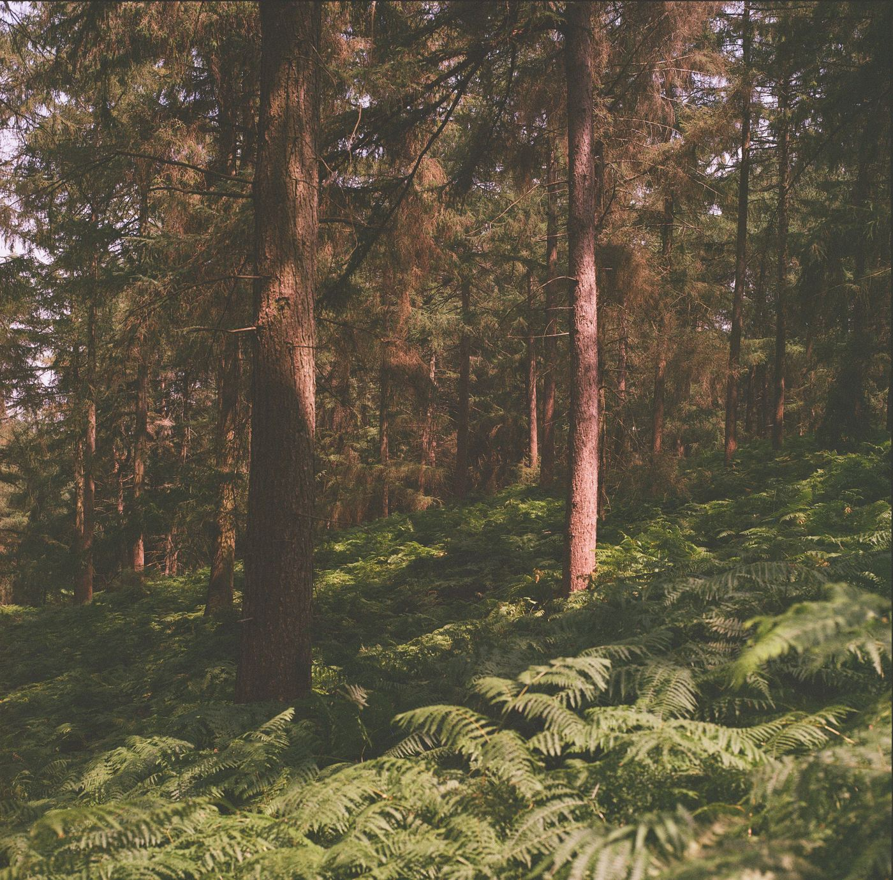
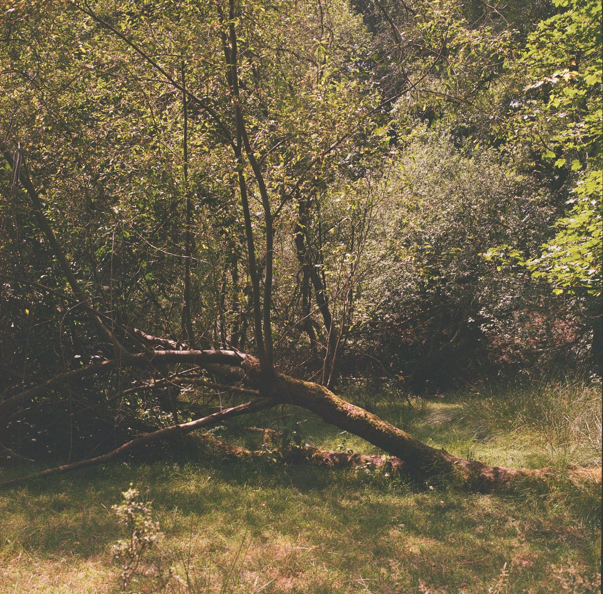
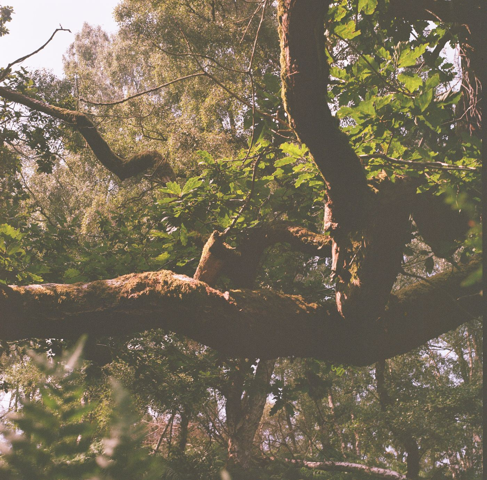

Photographs
Hasselblad 500C/M
I have been walking Cannock Chase using film that I didn't give away.
Here are the early test shots.
June 2026 · Cannock Chase · 6×6 on expired film

Lomography Color Negative 400, expired, 6×6, Hasselblad 500C/M.
Cannock Chase, June 2026.

Lomography Color Negative 400, expired, 6×6, Hasselblad 500C/M.
Cannock Chase, June 2026.

Lomography Color Negative 400, expired, 6×6, Hasselblad 500C/M.
Cannock Chase, June 2026.